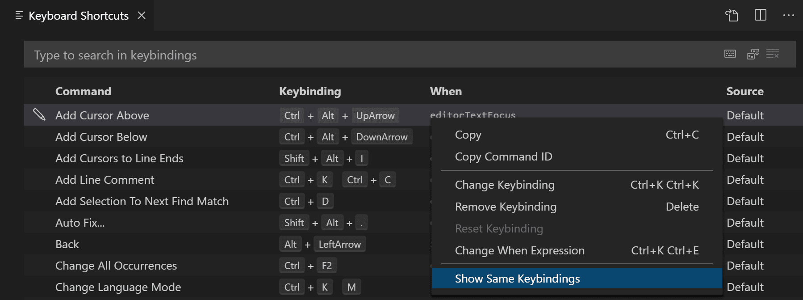
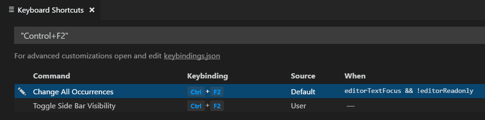

Key Bindings for Visual Studio Code
Visual Studio Code lets you perform most tasks directly from the keyboard. This page lists out the default bindings (keyboard shortcuts) and describes how you can update them.
Note: If you visit this page on a Mac, you will see the key bindings for the Mac. If you visit using Windows or Linux, you will see the keys for that platform. If you need the key bindings for another platform, hover your mouse over the key you are interested in.
Keyboard Shortcuts editor
Visual Studio Code provides a rich and easy keyboard shortcuts editing experience using Keyboard Shortcuts editor. It lists all available commands with and without keybindings and you can easily change / remove / reset their keybindings using the available actions. It also has a search box on the top that helps you in finding commands or keybindings. You can open this editor by going to the menu under File > Preferences > Keyboard Shortcuts. (Code > Preferences > Keyboard Shortcuts on macOS)

Most importantly, you can see keybindings according to your keyboard layout. For example, key binding Cmd+\ in US keyboard layout will be shown as Ctrl+Shift+Alt+Cmd+7 when layout is changed to German. The dialog to enter key binding will assign the correct and desired key binding as per your keyboard layout.
For doing more advanced keyboard shortcut customization, read Advanced Customization.
Keymap extensions
Keyboard shortcuts are vital to productivity and changing keyboarding habits can be tough. To help with this, File > Preferences > Migrate Keyboard Shortcuts from... shows you a list of popular keymap extensions. These extensions modify the VS Code shortcuts to match those of other editors so you don't need to learn new keyboard shortcuts. There is also a Keymaps category of extensions in the Marketplace.
Tip: Click on an extension tile above to read the description and reviews to decide which extension is best for you. See more in the Marketplace.
Keyboard Shortcuts Reference
We also have a printable version of these keyboard shortcuts. Help > Keyboard Shortcut Reference displays a condensed PDF version suitable for printing as an easy reference.
Below are links to the three platform-specific versions (US English keyboard):
Detecting keybinding conflicts
If you have many extensions installed or you have customized your keyboard shortcuts, you can sometimes have keybinding conflicts where the same keyboard shortcut is mapped to several commands. This can result in confusing behavior, especially if different keybindings are going in and out of scope as you move around the editor.
The Keyboard Shortcuts editor has a context menu command Show Same Keybindings, which will filter the keybindings based on a keyboard shortcut to display conflicts.

Pick a command with the keybinding you think is overloaded and you can see if multiple commands are defined, the source of the keybindings and when they are active.

Troubleshooting keybindings
To troubleshoot keybindings problems, you can execute the command Developer: Toggle Keyboard Shortcuts Troubleshooting. This will activate logging of dispatched keyboard shortcuts and will open an output panel with the corresponding log file.
You can then press your desired keybinding and check what keyboard shortcut VS Code detects and what command is invoked.
For example, when pressing cmd+/ in a code editor on macOS, the logging output would be:
[KeybindingService]: / Received keydown event - modifiers: [meta], code: MetaLeft, keyCode: 91, key: Meta
[KeybindingService]: | Converted keydown event - modifiers: [meta], code: MetaLeft, keyCode: 57 ('Meta')
[KeybindingService]: \ Keyboard event cannot be dispatched.
[KeybindingService]: / Received keydown event - modifiers: [meta], code: Slash, keyCode: 191, key: /
[KeybindingService]: | Converted keydown event - modifiers: [meta], code: Slash, keyCode: 85 ('/')
[KeybindingService]: | Resolving meta+[Slash]
[KeybindingService]: \ From 2 keybinding entries, matched editor.action.commentLine, when: editorTextFocus && !editorReadonly, source: built-in.
The first keydown event is for the MetaLeft key (cmd) and cannot be dispatched. The second keydown event is for the Slash key (/) and is dispatched as meta+[Slash]. There were two keybinding entries mapped from meta+[Slash] and the one that matched was for the command editor.action.commentLine, which has the when condition editorTextFocus && !editorReadonly and is a built-in keybinding entry.
Viewing modified keybindings
You can view any user modified keyboard shortcuts in VS Code in the Keyboard Shortcuts editor with the Show User Keybindings command in the More Actions (...) menu. This applies the @source:user filter to the Keyboard Shortcuts editor (Source is 'User').

Advanced customization
All keyboard shortcuts in VS Code can be customized via the keybindings.json file.
- To configure keyboard shortcuts through the JSON file, open Keyboard Shortcuts editor and select the Open Keyboard Shortcuts (JSON) button on the right of the editor title bar.
- This will open your
keybindings.jsonfile where you can overwrite the Default Keyboard Shortcuts.

You can also open the keybindings.json file from the Command Palette (P (Windows, Linux Ctrl+Shift+P)) with the Preferences: Open Keyboard Shortcuts (JSON) command.
Keyboard rules
Each rule consists of:
- a
keythat describes the pressed keys. - a
commandcontaining the identifier of the command to execute. - an optional
whenclause containing a boolean expression that will be evaluated depending on the current context.
Chords (two separate keypress actions) are described by separating the two keypresses with a space. For example, Ctrl+K Ctrl+C.
When a key is pressed:
- the rules are evaluated from bottom to top.
- the first rule that matches, both the
keyand in terms ofwhen, is accepted. - no more rules are processed.
- if a rule is found and has a
commandset, thecommandis executed.
The additional keybindings.json rules are appended at runtime to the bottom of the default rules, thus allowing them to overwrite the default rules. The keybindings.json file is watched by VS Code so editing it while VS Code is running will update the rules at runtime.
The keyboard shortcuts dispatching is done by analyzing a list of rules that are expressed in JSON. Here are some examples:
// Keybindings that are active when the focus is in the editor
{ "key": "home", "command": "cursorHome", "when": "editorTextFocus" },
{ "key": "shift+home", "command": "cursorHomeSelect", "when": "editorTextFocus" },
// Keybindings that are complementary
{ "key": "f5", "command": "workbench.action.debug.continue", "when": "inDebugMode" },
{ "key": "f5", "command": "workbench.action.debug.start", "when": "!inDebugMode" },
// Global keybindings
{ "key": "ctrl+f", "command": "actions.find" },
{ "key": "alt+left", "command": "workbench.action.navigateBack" },
{ "key": "alt+right", "command": "workbench.action.navigateForward" },
// Global keybindings using chords (two separate keypress actions)
{ "key": "ctrl+k enter", "command": "workbench.action.keepEditor" },
{ "key": "ctrl+k ctrl+w", "command": "workbench.action.closeAllEditors" },
Accepted keys
The key is made up of modifiers and the key itself.
The following modifiers are accepted:
| Platform | Modifiers |
|---|---|
| macOS | Ctrl+, Shift+, Alt+, Cmd+ |
| Windows | Ctrl+, Shift+, Alt+, Win+ |
| Linux | Ctrl+, Shift+, Alt+, Meta+ |
The following keys are accepted:
- f1-f19, a-z, 0-9
- `, -, =, [, ], \, ;, ', ,, ., /
- left, up, right, down, pageup, pagedown, end, home
- tab, enter, escape, space, backspace, delete
- pausebreak, capslock, insert
- numpad0-numpad9, numpad_multiply, numpad_add, numpad_separator
- numpad_subtract, numpad_decimal, numpad_divide
Command arguments
You can invoke a command with arguments. This is useful if you often perform the same operation on a specific file or folder. You can add a custom keyboard shortcut to do exactly what you want.
The following is an example overriding the Enter key to print some text:
{
"key": "enter",
"command": "type",
"args": { "text": "Hello World" },
"when": "editorTextFocus"
}
The type command will receive {"text": "Hello World"} as its first argument and add "Hello World" to the file instead of producing the default command.
For more information on commands that take arguments, refer to Built-in Commands.
Removing a specific key binding rule
You can write a key binding rule that targets the removal of a specific default key binding. With the keybindings.json, it was always possible to redefine all the key bindings of VS Code, but it can be difficult to make a small tweak, especially around overloaded keys, such as Tab or Escape. To remove a specific key binding, add a - to the command and the rule will be a removal rule.
Here is an example:
// In Default Keyboard Shortcuts
...
{ "key": "tab", "command": "tab", "when": ... },
{ "key": "tab", "command": "jumpToNextSnippetPlaceholder", "when": ... },
{ "key": "tab", "command": "acceptSelectedSuggestion", "when": ... },
...
// To remove the second rule, for example, add in keybindings.json:
{ "key": "tab", "command": "-jumpToNextSnippetPlaceholder" }
To override a specific key binding rule with an empty action, you can specify an empty command:
// To override and disable any `tab` keybinding, for example, add in keybindings.json:
{ "key": "tab", "command": "" }
Keyboard layouts
Note: This section relates only to key bindings, not to typing in the editor.
The keys above are string representations for virtual keys and do not necessarily relate to the produced character when they are pressed. More precisely:
- Reference: Virtual-Key Codes (Windows)
- tab for
VK_TAB(0x09) - ; for
VK_OEM_1(0xBA) - = for
VK_OEM_PLUS(0xBB) - , for
VK_OEM_COMMA(0xBC) - - for
VK_OEM_MINUS(0xBD) - . for
VK_OEM_PERIOD(0xBE) - / for
VK_OEM_2(0xBF) - ` for
VK_OEM_3(0xC0) - [ for
VK_OEM_4(0xDB) - \ for
VK_OEM_5(0xDC) - ] for
VK_OEM_6(0xDD) - ' for
VK_OEM_7(0xDE) - etc.
Different keyboard layouts usually reposition the above virtual keys or change the characters produced when they are pressed. When using a different keyboard layout than the standard US, Visual Studio Code does the following:
All the key bindings are rendered in the UI using the current system's keyboard layout. For example, Split Editor when using a French (France) keyboard layout is now rendered as Ctrl+*:

When editing keybindings.json, VS Code highlights misleading key bindings, those that are represented in the file with the character produced under the standard US keyboard layout, but that need pressing keys with different labels under the current system's keyboard layout. For example, here is how the Default Keyboard Shortcuts rules look like when using a French (France) keyboard layout:

There is also a widget that helps input the key binding rule when editing keybindings.json. To launch the Define Keybinding widget, press K K (Windows, Linux Ctrl+K Ctrl+K). The widget listens for key presses and renders the serialized JSON representation in the text box and below it, the keys that VS Code has detected under your current keyboard layout. Once you've typed the key combination you want, you can press Enter and a rule snippet will be inserted.

Note: On Linux, Visual Studio Code detects your current keyboard layout on start-up and then caches this information. For a good experience, we recommend restarting VS Code if you change your keyboard layout.
Keyboard layout-independent bindings
Using scan codes, it is possible to define keybindings which do not change with the change of the keyboard layout. For example:
{ "key": "cmd+[Slash]", "command": "editor.action.commentLine", "when": "editorTextFocus" }
Accepted scan codes:
- [F1]-[F19], [KeyA]-[KeyZ], [Digit0]-[Digit9]
- [Backquote], [Minus], [Equal], [BracketLeft], [BracketRight], [Backslash], [Semicolon], [Quote], [Comma], [Period], [Slash]
- [ArrowLeft], [ArrowUp], [ArrowRight], [ArrowDown], [PageUp], [PageDown], [End], [Home]
- [Tab], [Enter], [Escape], [Space], [Backspace], [Delete]
- [Pause], [CapsLock], [Insert]
- [Numpad0]-[Numpad9], [NumpadMultiply], [NumpadAdd], [NumpadComma]
- [NumpadSubtract], [NumpadDecimal], [NumpadDivide]
when clause contexts
VS Code gives you fine control over when your key bindings are enabled through the optional when clause. If your key binding doesn't have a when clause, the key binding is globally available at all times. A when clause evaluates to either Boolean true or false for enabling key bindings.
VS Code sets various context keys and specific values depending on what elements are visible and active in the VS Code UI. For example, the built-in Start Debugging command has the keyboard shortcut F5, which is only enabled when there is an appropriate debugger available (context debuggersAvailable is true) and the editor isn't in debug mode (context inDebugMode is false):

You can also view a keybinding's when clause directly in the Default Keybindings JSON (Preferences: Open Default Keyboard Shortcuts (JSON)):
{ "key": "f5", "command": "workbench.action.debug.start",
"when": "debuggersAvailable && !inDebugMode" },
Conditional operators
For when clause conditional expressions, the following conditional operators are useful for keybindings:
| Operator | Symbol | Example |
|---|---|---|
| Equality | == |
"editorLangId == typescript" |
| Inequality | != |
"resourceExtname != .js" |
| Or | || |
"isLinux||isWindows" |
| And | && |
"textInputFocus && !editorReadonly" |
| Matches | =~ |
"resourceScheme =~ /^untitled$|^file$/" |
You can find the full list of when clause conditional operators in the when clause contexts reference.
Available contexts
You can find some of the available when clause contexts in the when clause context reference.
The list there isn't exhaustive and you can find other when clause contexts by searching and filtering in the Keyboard Shortcuts editor (Preferences: Open Keyboard Shortcuts ) or reviewing the Default Keybindings JSON file (Preferences: Open Default Keyboard Shortcuts (JSON)).
Custom keybindings for refactorings
The editor.action.codeAction command lets you configure keybindings for specific Refactorings (Code Actions). For example, the keybinding below triggers the Extract function refactoring Code Actions:
{
"key": "ctrl+shift+r ctrl+e",
"command": "editor.action.codeAction",
"args": {
"kind": "refactor.extract.function"
}
}
This is covered in depth in the Refactoring topic where you can learn about different kinds of Code Actions and how to prioritize them in the case of multiple possible refactorings.
Default Keyboard Shortcuts
You can view all default keyboard shortcuts in VS Code in the Keyboard Shortcuts editor with the Show Default Keybindings command in the More Actions (...) menu. This applies the @source:default filter to the Keyboard Shortcuts editor (Source is 'Default').
You can view the default keyboard shortcuts as a JSON file using the command Preferences: Open Default Keyboard Shortcuts (JSON).
Note: The following keys are rendered assuming a standard US keyboard layout. If you use a different keyboard layout, please read below. You can view the currently active keyboard shortcuts in VS Code in the Command Palette (View -> Command Palette) or in the Keyboard Shortcuts editor (File > Preferences > Keyboard Shortcuts).
Some commands included below do not have default keyboard shortcuts and so are displayed as unassigned but you can assign your own keybindings.
Basic Editing
| Command | Key | Command id |
|---|---|---|
| Cut line (empty selection) | X (Windows, Linux Ctrl+X) | editor.action.clipboardCutAction |
| Copy line (empty selection) | C (Windows, Linux Ctrl+C) | editor.action.clipboardCopyAction |
| Paste | V (Windows, Linux Ctrl+V) | editor.action.clipboardPasteAction |
| Delete Line | K (Windows, Linux Ctrl+Shift+K) | editor.action.deleteLines |
| Insert Line Below | Enter (Windows, Linux Ctrl+Enter) | editor.action.insertLineAfter |
| Insert Line Above | Enter (Windows, Linux Ctrl+Shift+Enter) | editor.action.insertLineBefore |
| Move Line Down | (Windows, Linux Alt+Down) | editor.action.moveLinesDownAction |
| Move Line Up | (Windows, Linux Alt+Up) | editor.action.moveLinesUpAction |
| Copy Line Down | (Windows Shift+Alt+Down, Linux Ctrl+Shift+Alt+Down) | editor.action.copyLinesDownAction |
| Copy Line Up | (Windows Shift+Alt+Up, Linux Ctrl+Shift+Alt+Up) | editor.action.copyLinesUpAction |
| Undo | Z (Windows, Linux Ctrl+Z) | undo |
| Redo | Z (Windows, Linux Ctrl+Y) | redo |
| Add Selection To Next Find Match | D (Windows, Linux Ctrl+D) | editor.action.addSelectionToNextFindMatch |
| Move Last Selection To Next Find Match | K D (Windows, Linux Ctrl+K Ctrl+D) | editor.action.moveSelectionToNextFindMatch |
| Undo last cursor operation | U (Windows, Linux Ctrl+U) | cursorUndo |
| Insert cursor at end of each line selected | I (Windows, Linux Shift+Alt+I) | editor.action.insertCursorAtEndOfEachLineSelected |
| Select all occurrences of current selection | L (Windows, Linux Ctrl+Shift+L) | editor.action.selectHighlights |
| Select all occurrences of current word | F2 (Windows, Linux Ctrl+F2) | editor.action.changeAll |
| Select current line | L (Windows, Linux Ctrl+L) | expandLineSelection |
| Insert Cursor Below | (Windows Ctrl+Alt+Down, Linux Shift+Alt+Down) | editor.action.insertCursorBelow |
| Insert Cursor Above | (Windows Ctrl+Alt+Up, Linux Shift+Alt+Up) | editor.action.insertCursorAbove |
| Jump to matching bracket | \ (Windows, Linux Ctrl+Shift+\) | editor.action.jumpToBracket |
| Indent Line | ] (Windows, Linux Ctrl+]) | editor.action.indentLines |
| Outdent Line | [ (Windows, Linux Ctrl+[) | editor.action.outdentLines |
| Go to Beginning of Line | Home | cursorHome |
| Go to End of Line | End | cursorEnd |
| Go to End of File | (Windows, Linux Ctrl+End) | cursorBottom |
| Go to Beginning of File | (Windows, Linux Ctrl+Home) | cursorTop |
| Scroll Line Down | PageDown (Windows, Linux Ctrl+Down) | scrollLineDown |
| Scroll Line Up | PageUp (Windows, Linux Ctrl+Up) | scrollLineUp |
| Scroll Page Down | PageDown (Windows, Linux Alt+PageDown) | scrollPageDown |
| Scroll Page Up | PageUp (Windows, Linux Alt+PageUp) | scrollPageUp |
| Fold (collapse) region | [ (Windows, Linux Ctrl+Shift+[) | editor.fold |
| Unfold (uncollapse) region | ] (Windows, Linux Ctrl+Shift+]) | editor.unfold |
| Fold (collapse) all subregions | K [ (Windows, Linux Ctrl+K Ctrl+[) | editor.foldRecursively |
| Unfold (uncollapse) all subregions | K ] (Windows, Linux Ctrl+K Ctrl+]) | editor.unfoldRecursively |
| Fold (collapse) all regions | K 0 (Windows, Linux Ctrl+K Ctrl+0) | editor.foldAll |
| Unfold (uncollapse) all regions | K J (Windows, Linux Ctrl+K Ctrl+J) | editor.unfoldAll |
| Add Line Comment | K C (Windows, Linux Ctrl+K Ctrl+C) | editor.action.addCommentLine |
| Remove Line Comment | K U (Windows, Linux Ctrl+K Ctrl+U) | editor.action.removeCommentLine |
| Toggle Line Comment | / (Windows, Linux Ctrl+/) | editor.action.commentLine |
| Toggle Block Comment | A (Windows Shift+Alt+A, Linux Ctrl+Shift+A) | editor.action.blockComment |
| Find | F (Windows, Linux Ctrl+F) | actions.find |
| Replace | F (Windows, Linux Ctrl+H) | editor.action.startFindReplaceAction |
| Find Next | Enter | editor.action.nextMatchFindAction |
| Find Previous | Enter (Windows, Linux Shift+Enter) | editor.action.previousMatchFindAction |
| Select All Occurrences of Find Match | Enter (Windows, Linux Alt+Enter) | editor.action.selectAllMatches |
| Toggle Find Case Sensitive | C (Windows, Linux Alt+C) | toggleFindCaseSensitive |
| Toggle Find Regex | R (Windows, Linux Alt+R) | toggleFindRegex |
| Toggle Find Whole Word | W (Windows, Linux Alt+W) | toggleFindWholeWord |
| Toggle Use of Tab Key for Setting Focus | M (Windows, Linux Ctrl+M) | editor.action.toggleTabFocusMode |
| Toggle Render Whitespace | toggleRenderWhitespace |
|
| Toggle Word Wrap | Z (Windows, Linux Alt+Z) | editor.action.toggleWordWrap |
Rich Languages Editing
| Command | Key | Command id |
|---|---|---|
| Trigger Suggest | Space (Windows, Linux Ctrl+Space) | editor.action.triggerSuggest |
| Trigger Parameter Hints | Space (Windows, Linux Ctrl+Shift+Space) | editor.action.triggerParameterHints |
| Format Document | F (Windows Shift+Alt+F, Linux Ctrl+Shift+I) | editor.action.formatDocument |
| Format Selection | K F (Windows, Linux Ctrl+K Ctrl+F) | editor.action.formatSelection |
| Go to Definition | F12 | editor.action.revealDefinition |
| Show Hover | K I (Windows, Linux Ctrl+K Ctrl+I) | editor.action.showHover |
| Peek Definition | F12 (Windows Alt+F12, Linux Ctrl+Shift+F10) | editor.action.peekDefinition |
| Open Definition to the Side | K F12 (Windows, Linux Ctrl+K F12) | editor.action.revealDefinitionAside |
| Quick Fix | . (Windows, Linux Ctrl+.) | editor.action.quickFix |
| Go to References | F12 (Windows, Linux Shift+F12) | editor.action.goToReferences |
| Rename Symbol | F2 | editor.action.rename |
| Replace with Next Value | . (Windows, Linux Ctrl+Shift+.) | editor.action.inPlaceReplace.down |
| Replace with Previous Value | , (Windows, Linux Ctrl+Shift+,) | editor.action.inPlaceReplace.up |
| Expand AST Selection | (Windows, Linux Shift+Alt+Right) | editor.action.smartSelect.expand |
| Shrink AST Selection | (Windows, Linux Shift+Alt+Left) | editor.action.smartSelect.shrink |
| Trim Trailing Whitespace | K X (Windows, Linux Ctrl+K Ctrl+X) | editor.action.trimTrailingWhitespace |
| Change Language Mode | K M (Windows, Linux Ctrl+K M) | workbench.action.editor.changeLanguageMode |
Navigation
| Command | Key | Command id |
|---|---|---|
| Show All Symbols | T (Windows, Linux Ctrl+T) | workbench.action.showAllSymbols |
| Go to Line... | G (Windows, Linux Ctrl+G) | workbench.action.gotoLine |
| Go to File..., Quick Open | P (Windows, Linux Ctrl+P) | workbench.action.quickOpen |
| Go to Symbol... | O (Windows, Linux Ctrl+Shift+O) | workbench.action.gotoSymbol |
| Show Problems | M (Windows, Linux Ctrl+Shift+M) | workbench.actions.view.problems |
| Go to Next Error or Warning | F8 | editor.action.marker.nextInFiles |
| Go to Previous Error or Warning | F8 (Windows, Linux Shift+F8) | editor.action.marker.prevInFiles |
| Show All Commands | P (Windows, Linux Ctrl+Shift+P) or F1 | workbench.action.showCommands |
| Navigate Editor Group History | Tab (Windows, Linux Ctrl+Tab) | workbench.action.quickOpenPreviousRecentlyUsedEditorInGroup |
| Go Back | - (Windows Alt+Left, Linux Ctrl+Alt+-) | workbench.action.navigateBack |
| Go back in Quick Input | - (Windows Alt+Left, Linux Ctrl+Alt+-) | workbench.action.quickInputBack |
| Go Forward | - (Windows Alt+Right, Linux Ctrl+Shift+-) | workbench.action.navigateForward |
Editor/Window Management
| Command | Key | Command id |
|---|---|---|
| New Window | N (Windows, Linux Ctrl+Shift+N) | workbench.action.newWindow |
| Close Window | W (Windows, Linux Alt+F4) | workbench.action.closeWindow |
| Close Editor | W (Windows, Linux Ctrl+W) | workbench.action.closeActiveEditor |
| Close Folder | K F (Windows, Linux Ctrl+K F) | workbench.action.closeFolder |
| Cycle Between Editor Groups | workbench.action.navigateEditorGroups |
|
| Split Editor | \ (Windows, Linux Ctrl+\) | workbench.action.splitEditor |
| Focus into First Editor Group | 1 (Windows, Linux Ctrl+1) | workbench.action.focusFirstEditorGroup |
| Focus into Second Editor Group | 2 (Windows, Linux Ctrl+2) | workbench.action.focusSecondEditorGroup |
| Focus into Third Editor Group | 3 (Windows, Linux Ctrl+3) | workbench.action.focusThirdEditorGroup |
| Focus into Editor Group on the Left | workbench.action.focusPreviousGroup |
|
| Focus into Editor Group on the Right | workbench.action.focusNextGroup |
|
| Move Editor Left | K (Windows, Linux Ctrl+Shift+PageUp) | workbench.action.moveEditorLeftInGroup |
| Move Editor Right | K (Windows, Linux Ctrl+Shift+PageDown) | workbench.action.moveEditorRightInGroup |
| Move Active Editor Group Left | K (Windows, Linux Ctrl+K Left) | workbench.action.moveActiveEditorGroupLeft |
| Move Active Editor Group Right | K (Windows, Linux Ctrl+K Right) | workbench.action.moveActiveEditorGroupRight |
| Move Editor into Next Group | (Windows, Linux Ctrl+Alt+Right) | workbench.action.moveEditorToNextGroup |
| Move Editor into Previous Group | (Windows, Linux Ctrl+Alt+Left) | workbench.action.moveEditorToPreviousGroup |
File Management
| Command | Key | Command id |
|---|---|---|
| New File | N (Windows, Linux Ctrl+N) | workbench.action.files.newUntitledFile |
| Open File... | O (Windows, Linux Ctrl+O) | workbench.action.files.openFile |
| Save | S (Windows, Linux Ctrl+S) | workbench.action.files.save |
| Save All | S (Windows Ctrl+K S, Linux ) | saveAll |
| Save As... | S (Windows, Linux Ctrl+Shift+S) | workbench.action.files.saveAs |
| Close | W (Windows, Linux Ctrl+W) | workbench.action.closeActiveEditor |
| Close Others | T (Windows, Linux ) | workbench.action.closeOtherEditors |
| Close Group | K W (Windows, Linux Ctrl+K W) | workbench.action.closeEditorsInGroup |
| Close Other Groups | workbench.action.closeEditorsInOtherGroups |
|
| Close Group to Left | workbench.action.closeEditorsToTheLeft |
|
| Close Group to Right | workbench.action.closeEditorsToTheRight |
|
| Close All | K W (Windows, Linux Ctrl+K Ctrl+W) | workbench.action.closeAllEditors |
| Reopen Closed Editor | T (Windows, Linux Ctrl+Shift+T) | workbench.action.reopenClosedEditor |
| Keep Open | K Enter (Windows, Linux Ctrl+K Enter) | workbench.action.keepEditor |
| Copy Path of Active File | K P (Windows, Linux Ctrl+K P) | workbench.action.files.copyPathOfActiveFile |
| Reveal Active File in Windows | K R (Windows, Linux Ctrl+K R) | workbench.action.files.revealActiveFileInWindows |
| Show Opened File in New Window | K O (Windows, Linux Ctrl+K O) | workbench.action.files.showOpenedFileInNewWindow |
| Compare Opened File With | workbench.files.action.compareFileWith |
Display
| Command | Key | Command id |
|---|---|---|
| Toggle Full Screen | F (Windows, Linux F11) | workbench.action.toggleFullScreen |
| Toggle Zen Mode | K Z (Windows, Linux Ctrl+K Z) | workbench.action.toggleZenMode |
| Leave Zen Mode | Escape Escape | workbench.action.exitZenMode |
| Zoom in | = (Windows, Linux Ctrl+=) | workbench.action.zoomIn |
| Zoom out | - (Windows, Linux Ctrl+-) | workbench.action.zoomOut |
| Reset Zoom | Numpad0 (Windows, Linux Ctrl+Numpad0) | workbench.action.zoomReset |
| Toggle Sidebar Visibility | B (Windows, Linux Ctrl+B) | workbench.action.toggleSidebarVisibility |
| Show Explorer / Toggle Focus | E (Windows, Linux Ctrl+Shift+E) | workbench.view.explorer |
| Show Search | F (Windows, Linux Ctrl+Shift+F) | workbench.view.search |
| Show Source Control | G (Windows, Linux Ctrl+Shift+G) | workbench.view.scm |
| Show Run | D (Windows, Linux Ctrl+Shift+D) | workbench.view.debug |
| Show Extensions | X (Windows, Linux Ctrl+Shift+X) | workbench.view.extensions |
| Show Output | U (Windows Ctrl+Shift+U, Linux Ctrl+K Ctrl+H) | workbench.action.output.toggleOutput |
| Quick Open View | Q (Windows Ctrl+Q, Linux ) | workbench.action.quickOpenView |
| Open New Command Prompt | C (Windows, Linux Ctrl+Shift+C) | workbench.action.terminal.openNativeConsole |
| Toggle Markdown Preview | V (Windows, Linux Ctrl+Shift+V) | markdown.showPreview |
| Open Preview to the Side | K V (Windows, Linux Ctrl+K V) | markdown.showPreviewToSide |
| Toggle Integrated Terminal | ` (Windows, Linux Ctrl+`) | workbench.action.terminal.toggleTerminal |
Search
| Command | Key | Command id |
|---|---|---|
| Show Search | F (Windows, Linux Ctrl+Shift+F) | workbench.view.search |
| Replace in Files | H (Windows, Linux Ctrl+Shift+H) | workbench.action.replaceInFiles |
| Toggle Match Case | C (Windows, Linux Alt+C) | toggleSearchCaseSensitive |
| Toggle Match Whole Word | W (Windows, Linux Alt+W) | toggleSearchWholeWord |
| Toggle Use Regular Expression | R (Windows, Linux Alt+R) | toggleSearchRegex |
| Toggle Search Details | J (Windows, Linux Ctrl+Shift+J) | workbench.action.search.toggleQueryDetails |
| Focus Next Search Result | F4 | search.action.focusNextSearchResult |
| Focus Previous Search Result | F4 (Windows, Linux Shift+F4) | search.action.focusPreviousSearchResult |
| Show Next Search Term | (Windows, Linux Down) | history.showNext |
| Show Previous Search Term | (Windows, Linux Up) | history.showPrevious |
Search Editor
| Command | Key | Command id |
|---|---|---|
| Open Results In Editor | Enter (Windows, Linux Alt+Enter) | search.action.openInEditor |
| Focus Search Editor Input | Escape | search.action.focusQueryEditorWidget |
| Search Again | R (Windows, Linux Ctrl+Shift+R) | rerunSearchEditorSearch |
| Delete File Results | Backspace (Windows, Linux Ctrl+Shift+Backspace) | search.searchEditor.action.deleteFileResults |
Preferences
| Command | Key | Command id |
|---|---|---|
| Open Settings | , (Windows, Linux Ctrl+,) | workbench.action.openSettings |
| Open Workspace Settings | workbench.action.openWorkspaceSettings |
|
| Open Keyboard Shortcuts | K S (Windows, Linux Ctrl+K Ctrl+S) | workbench.action.openGlobalKeybindings |
| Open User Snippets | workbench.action.openSnippets |
|
| Select Color Theme | K T (Windows, Linux Ctrl+K Ctrl+T) | workbench.action.selectTheme |
| Configure Display Language | workbench.action.configureLocale |
Debug
| Command | Key | Command id |
|---|---|---|
| Toggle Breakpoint | F9 | editor.debug.action.toggleBreakpoint |
| Start | F5 | workbench.action.debug.start |
| Continue | F5 | workbench.action.debug.continue |
| Start (without debugging) | F5 (Windows, Linux Ctrl+F5) | workbench.action.debug.run |
| Pause | F6 | workbench.action.debug.pause |
| Step Into | F11 | workbench.action.debug.stepInto |
Tasks
| Command | Key | Command id |
|---|---|---|
| Run Build Task | B (Windows, Linux Ctrl+Shift+B) | workbench.action.tasks.build |
| Run Test Task | workbench.action.tasks.test |
Extensions
| Command | Key | Command id |
|---|---|---|
| Install Extension | workbench.extensions.action.installExtension |
|
| Show Installed Extensions | workbench.extensions.action.showInstalledExtensions |
|
| Show Outdated Extensions | workbench.extensions.action.listOutdatedExtensions |
|
| Show Recommended Extensions | workbench.extensions.action.showRecommendedExtensions |
|
| Show Popular Extensions | workbench.extensions.action.showPopularExtensions |
|
| Update All Extensions | workbench.extensions.action.updateAllExtensions |
Next steps
Now that you know about our Key binding support, what's next...
- Language Support - Our Good, Better, Best language grid to see what you can expect
- Debugging - This is where VS Code really shines
- Node.js - End to end Node.js scenario with a sample app
Common questions
How can I find out what command is bound to a specific key?
In the Keyboard Shortcut editor, you can filter on specific keystrokes to see which commands are bound to which keys. Below you can see that Ctrl+Shift+P is bound to Show All Commands to bring up the Command Palette.

How to add a key binding to an action, for example, add Ctrl+D to Delete Lines
Find a rule that triggers the action in the Default Keyboard Shortcuts and write a modified version of it in your keybindings.json file:
// Original, in Default Keyboard Shortcuts
{ "key": "ctrl+shift+k", "command": "editor.action.deleteLines",
"when": "editorTextFocus" },
// Modified, in User/keybindings.json, Ctrl+D now will also trigger this action
{ "key": "ctrl+d", "command": "editor.action.deleteLines",
"when": "editorTextFocus" },
How can I add a key binding for only certain file types?
Use the editorLangId context key in your when clause:
{ "key": "shift+alt+a", "command": "editor.action.blockComment",
"when": "editorTextFocus && editorLangId == csharp" },
I have modified my key bindings in keybindings.json; why don't they work?
The most common problem is a syntax error in the file. Otherwise, try removing the when clause or picking a different key. Unfortunately, at this point, it is a trial and error process.